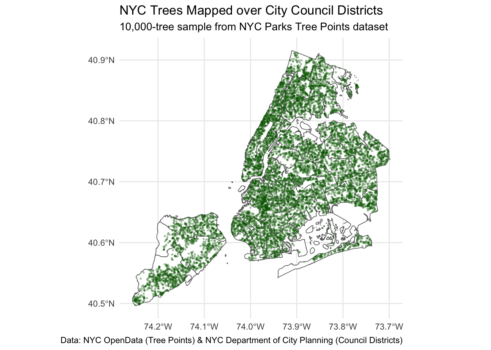
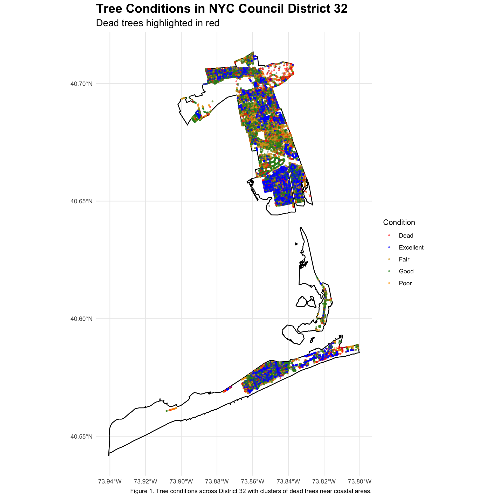
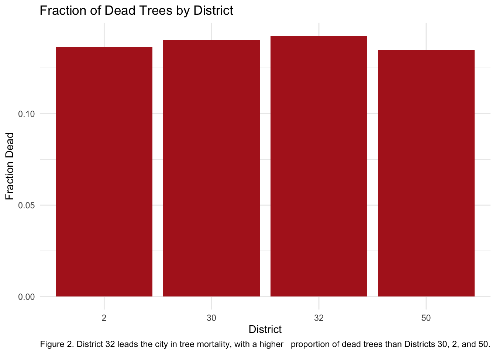

Mini-Project 03 - Visualizing and Maintaining the Green Canopy of NYC
Author
DolmaDev
Introduction
In this mini-project, I walk through the full process of using an API, handling a large geospatial dataset, and applying spatial analysis to understand patterns in NYC’s urban tree canopy. I rely on municipal open data—including the NYC Tree Points API and the City Council District shapefiles; and build a reproducible workflow that covers responsible data acquisition, paging through a large API, combining spatial data, and creating clear visualizations.
After exploring citywide trends, I focus on District 32 (South Queens), which stood out in my analysis with the highest proportion of dead trees in the city. Using what I learned from the spatial join and district-level comparisons, I developed a short, data-supported proposal for a targeted tree revitalization program. This helps show how open data and geospatial tools can support real municipal decision-making and how district-level insights can translate directly into policy recommendations.
Loading Libraries
Code
library(sf)
Linking to GEOS 3.13.0, GDAL 3.8.5, PROJ 9.5.1; sf_use_s2() is TRUE
── Conflicts ────────────────────────────────────────── tidyverse_conflicts() ──
✖ dplyr::filter() masks stats::filter()
✖ dplyr::lag() masks stats::lag()
ℹ Use the conflicted package (<http://conflicted.r-lib.org/>) to force all conflicts to become errors
Data Acquisition and Preparation
Task 1 — Council District Boundaries
Please find the data acquisition and preparation steps folded below:
Code
get_council_districts <-function() {# Ensure data/mp03 directory existsdata_dir <-file.path("data", "mp03")if (!dir.exists(data_dir)) {dir.create(data_dir, recursive =TRUE, showWarnings =FALSE)}# File pathszip_path <-file.path(data_dir, "nycc_25c.zip")shp_dir <-file.path(data_dir, "nycc_25c")rds_path <-file.path(data_dir, "council_districts_wgs84.rds")# Direct download URLcouncil_url <-"https://s-media.nyc.gov/agencies/dcp/assets/files/zip/data-tools/bytes/city-council/nycc_25c.zip"# Download only if neededif (!file.exists(zip_path)) {download.file(url = council_url, destfile = zip_path, mode ="wb")}# Unzip only if neededif (!dir.exists(shp_dir)) {unzip(zip_path, exdir = data_dir)}# If processed version exists, return itif (file.exists(rds_path)) {return(readRDS(rds_path))}# Find the .shp fileshp_file <-list.files(path = shp_dir,pattern ="\\.shp$",full.names =TRUE)if (length(shp_file) ==0) {stop("No .shp file found in data/mp03/nycc_25c.")}# Read + transform to WGS84districts_raw <- sf::st_read(shp_file[1], quiet =TRUE)districts_wgs84 <- sf::st_transform(districts_raw, crs ="WGS84")saveRDS(districts_wgs84, rds_path)districts_wgs84}# Create council districts object for later usedistricts <-get_council_districts()
Task 2 — NYC Tree Points via API (httr2)
Code
library(httr2)get_tree_points <-function(limit =10000, max_pages =Inf) {data_dir <-file.path("data", "mp03")if (!dir.exists(data_dir)) {dir.create(data_dir, recursive =TRUE, showWarnings =FALSE)}# Cache file for the fully combined datatrees_rds <-file.path(data_dir,sprintf("treepoints_all_limit%05d.rds", limit))# Only use cache when doing a full run (max_pages = Inf)if (is.infinite(max_pages) &&file.exists(trees_rds)) {message("Loading cached tree points from RDS...")return(readRDS(trees_rds))}# NYC OpenData Tree Points GeoJSON endpointbase_url <-"https://data.cityofnewyork.us/resource/hn5i-inap.geojson"sf_list <-list()offset <-0Lpage <-0Lrepeat {page <- page +1Lif (page > max_pages) break# safety for testing# File name for this page (offset-based)file_name <-sprintf("treepoints_limit%05d_%06d.geojson", limit, offset)file_path <-file.path(data_dir, file_name)# Only download if file not already presentif (!file.exists(file_path)) {message("Downloading page ", page, " (offset = ", offset, ")") req <-request(base_url) |>req_url_query("$limit"= limit,"$offset"= offset ) resp <-req_perform(req)# Write raw bytes to file so sf::st_read can open it laterwriteBin(resp_body_raw(resp), file_path)} else {message("Using existing file for page ", page, " (offset = ", offset, ")")}# Read the GeoJSON for this pagemessage("Reading ", file_path)page_sf <- sf::st_read(file_path, quiet =TRUE)n_rows <-nrow(page_sf)if (n_rows ==0) {message("No rows in this page; stopping.")break}sf_list[[length(sf_list) +1L]] <- page_sf# If fewer than limit rows, we've reached the endif (n_rows < limit) {message("Last page (", n_rows, " rows < limit ", limit, "); stopping.")break}# Otherwise, move offset forward and continueoffset <- offset + limit}if (length(sf_list) ==0) {stop("No tree data downloaded or read. Check the API URL or parameters.")}# Combine all pages into one big sf objecttrees_sf <-do.call(rbind, sf_list)# Cache full results only when doing a full runif (is.infinite(max_pages)) {saveRDS(trees_sf, trees_rds)}trees_sf}
Download full tree data
Code
trees <-get_tree_points(limit =5000)
Loading cached tree points from RDS...
Exploratory Analysis
Task 3 prep — Sample Tree Data for Mapping
Code
set.seed(9750) # for reproducibilitytrees_small <- dplyr::slice_sample(trees, n =10000)
Mapping NYC Trees
Task 3 — Plot All Tree Points over Council Districts
Code
library(ggplot2)ggplot() +# Layer 1: Council district boundariesgeom_sf(data = districts,fill ="white",color ="grey40",linewidth =0.3) +# Layer 2: Tree points (sample)geom_sf(data = trees_small,color ="darkgreen",alpha =0.3,size =0.4) +coord_sf() +labs(title ="NYC Trees Mapped over City Council Districts",subtitle ="10,000-tree sample from NYC Parks Tree Points dataset",caption ="Data: NYC OpenData (Tree Points) & NYC Department of City Planning (Council Districts)") +theme_minimal()

District-Level Analyses of Trees
Task 4— Join Trees to Council Districts
Code
library(dplyr)library(sf)# Spatial join: each tree gets its council district attributestrees_joined <-st_join( trees, districts,join = st_intersects,left =TRUE)
1. District with Most Trees
District 51 has the highest total number of trees in NYC, with approximately 70,965 trees recorded—the largest count of any council district.
District 7 has the highest tree density in New York City, with roughly 0.000284 trees per square meter, indicating the densest canopy relative to land area.
District 32 has the highest proportion of dead trees, with 14.3% of all tree records in the district classified as dead, suggesting elevated maintenance needs.
The Thornless Honeylocust (Gleditsia triacanthos var. inermis) is the most common tree species in Manhattan, with over 17,000 individuals city-recorded.
Revitalizing the Urban Canopy in District 32 (South Queens)
As the office of the City Council representative for District 32, we propose a Tree Replacement and Canopy Revitalization Program aimed at improving tree health, public safety, and long-term climate resilience across South Queens. District 32 includes coastal neighborhoods such as Howard Beach, Ozone Park, Rockaway Beach, and Broad Channel—areas that have historically faced storm damage, high winds, and saltwater exposure. These environmental stressors have contributed to elevated tree mortality, creating safety hazards and reducing canopy coverage in vulnerable communities.
Our analysis of NYC Parks Tree Points data shows that District 32 has the highest proportion of dead trees in New York City. Approximately 4,315 trees (14.3%) in the district are classified as dead—substantially higher than comparable districts including District 30 (14.0%), District 2 (13.6%), and District 50 (13.5%). This pattern of decline highlights an urgent need for targeted restoration and proactive investment in tree health.
Project Scope
The proposed program includes: - Removal of 4,000+ dead or hazardous trees across the district
- Planting of 3,500 new, climate-resilient street trees, emphasizing coastal-adapted species
- Restoration of approximately 2,500 planting sites through stump removal
- Ongoing monitoring and maintenance for the first three years after planting
Why District 32?
Compared with tree-dense districts like District 7, highly populated canopy districts like District 19, or the large-area forested District 51, District 32 stands out due to its combination of moderate canopy coverage and the highest mortality burden citywide. This creates an opportunity for meaningful canopy revitalization that supports both environmental equity and public safety.
Conclusion
District 32’s high mortality burden, combined with its exposure to severe weather and environmental stressors, makes it a clear priority for targeted investment. This Tree Replacement and Canopy Revitalization Program strengthens community safety, restores lost greenery, enhances environmental resilience, and ensures more equitable access to the environmental benefits of NYC’s urban forest.
Visual Evidence
Figure 1. Tree Conditions in District 32
Code
trees_d32 <- trees_joined |> dplyr::filter(CounDist ==32)district_32 <- districts |> dplyr::filter(CounDist ==32)ggplot() +geom_sf(data = district_32, fill =NA, color ="black", size =0.6) +geom_sf(data = trees_d32, aes(color = tpcondition), alpha =0.5, size =0.6) +scale_color_manual(values =c("Dead"="red","Good"="forestgreen","Poor"="orange","Excellent"="blue","Fair"="goldenrod" )) +labs(title ="Tree Conditions in NYC Council District 32",subtitle ="Dead trees highlighted in red",color ="Condition",caption ="Figure 1. Tree conditions across District 32 with clusters of dead trees near coastal areas." ) +theme_minimal() +theme(plot.title =element_text(size =18, face ="bold"),plot.subtitle =element_text(size =14),legend.position ="right" )

Figure 2. Fraction of Dead Trees: District 32 vs. Comparable Districts
Code
compare_dead <- dead_fraction |>dplyr::filter(CounDist %in%c(32, 30, 2, 50))ggplot(compare_dead, aes(x =factor(CounDist), y = frac_dead)) +geom_col(fill ="firebrick") +labs(title ="Fraction of Dead Trees by District",x ="District",y ="Fraction Dead",caption ="Figure 2. District 32 leads the city in tree mortality, with a higher proportion of dead trees than Districts 30, 2, and 50." ) +theme_minimal()

Figure 3. Proposed Replacement Plan for District 32
Code
ggplot(compare_dead |> dplyr::filter(CounDist ==32)) +geom_col(aes(x ="Dead Trees", y = n_dead), fill ="red") +geom_col(aes(x ="Proposed Replacements", y =3500), fill ="forestgreen") +labs(title ="District 32 Tree Replacement Plan",x ="",y ="Count",caption ="Figure 3. Comparison of existing dead trees in District 32 with the proposed number of climate-resilient replacement plantings." ) +theme_minimal()